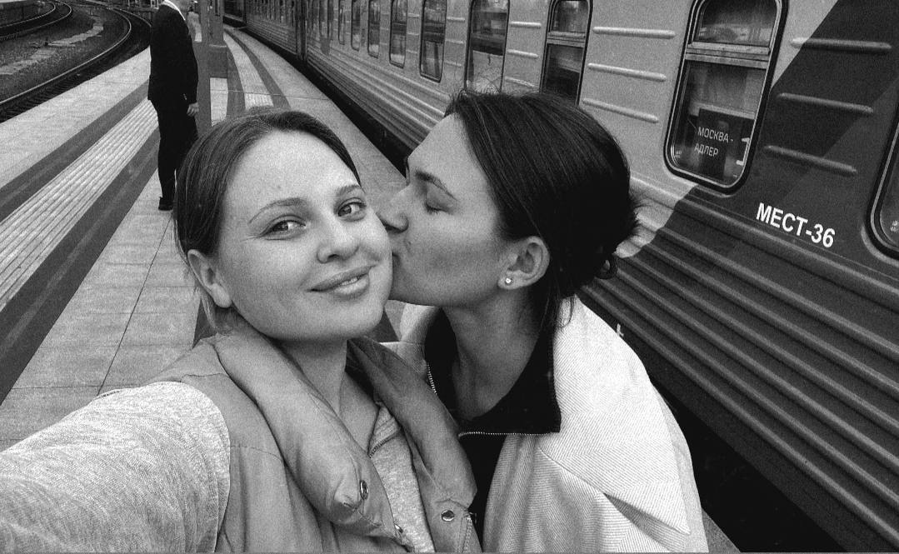
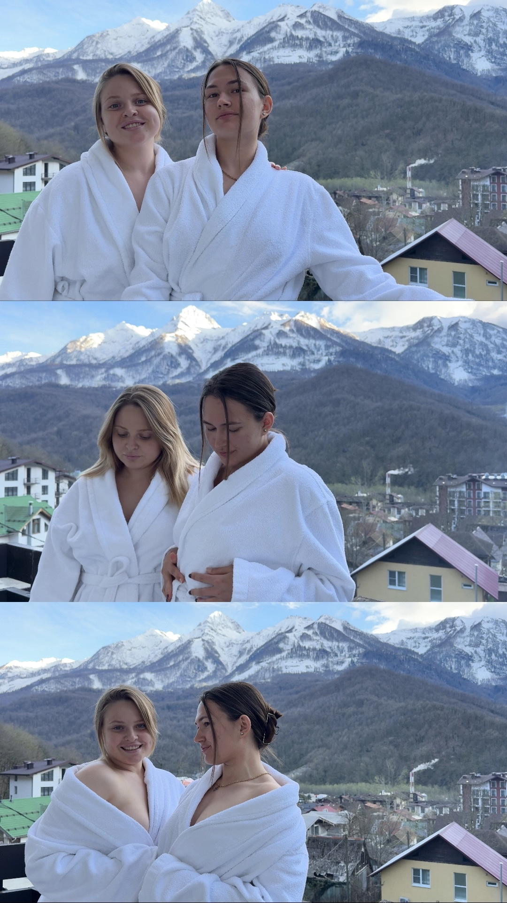
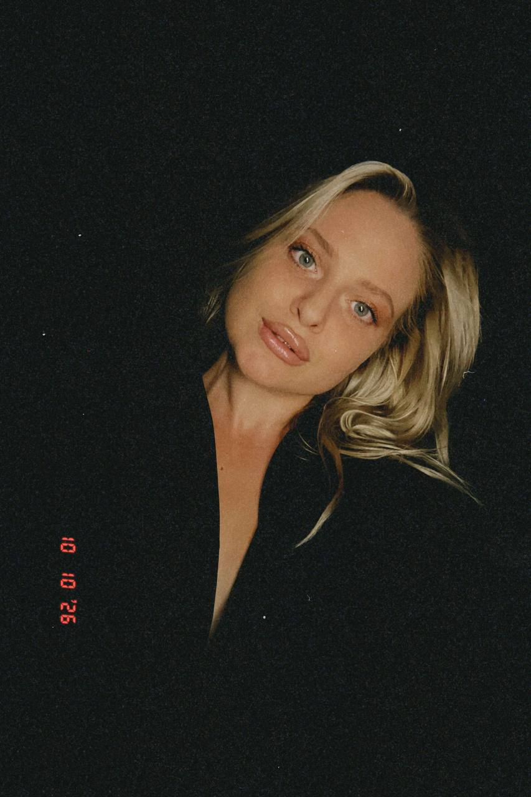
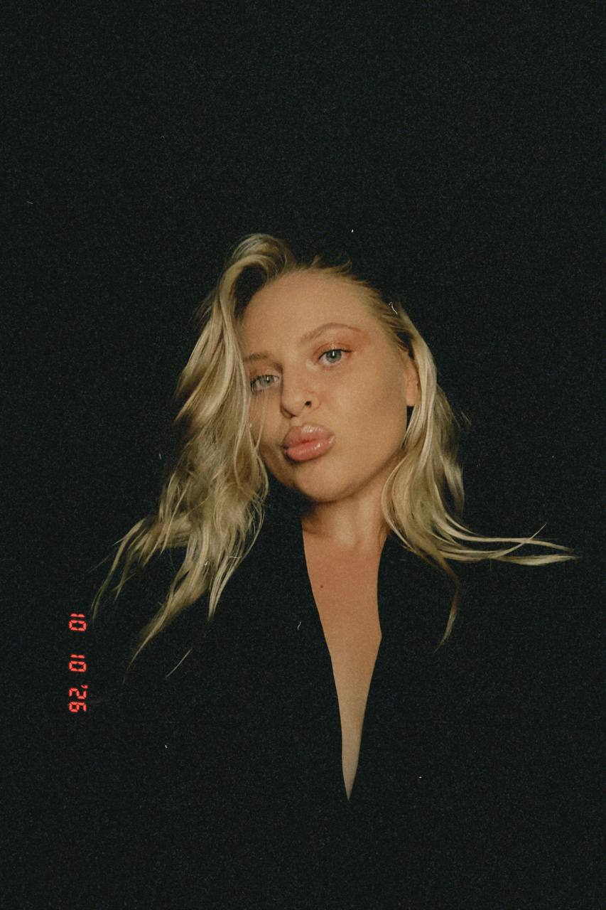
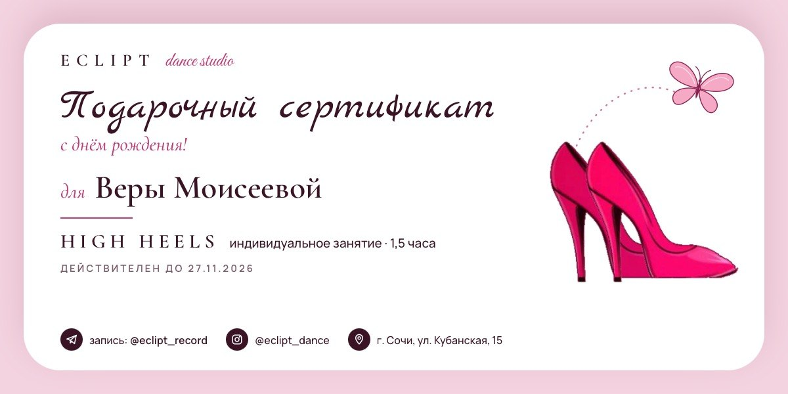
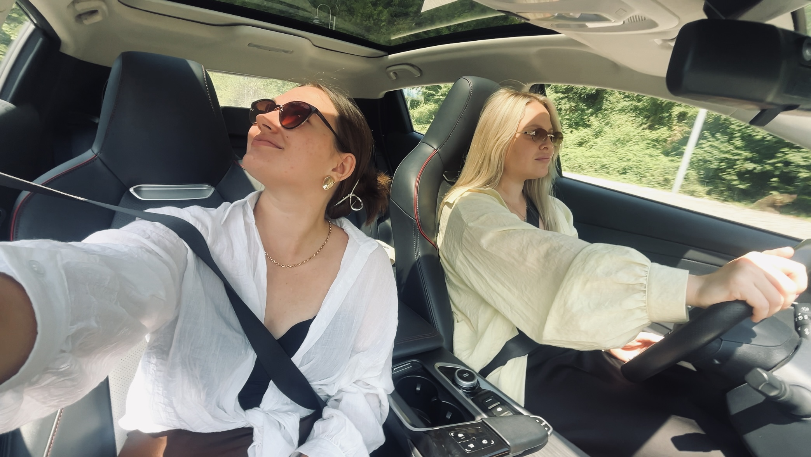

Пять маленьких напоминаний и один большой повод вспомнить, какая ты невероятная.

Для моей любимой подружки. С любовью, Ксю.
Письмо для тебя
Моя девочка, добро пожаловать.
Сегодня я хочу подарить тебе не просто несколько подарков. Я хочу пригласить тебя в маленькое путешествие — к самой себе.
Я знаю, что сейчас для тебя начинается новый этап. А на пороге чего-то нового особенно важно не забыть, кто ты, сколько в тебе красоты, силы, нежности и всего того, что делает тебя именно тобой.
Я очень хочу, чтобы ты заякорила это состояние — через ощущения, которые останутся с тобой навсегда.
Поэтому сегодня мы будем путешествовать через пять органов чувств. Пробовать, вдыхать, слушать, чувствовать и смотреть.
Каждое чувство станет маленьким напоминанием о том, что ты забираешь с собой в новую главу своей жизни.
А теперь устраивайся поудобнее, никуда не торопись и позволь себе побыть главной героиней этой истории.
Предисловие
«Если бы я могла подарить тебе весь мир...»

Наше фото
Когда я стану очень богатой, я буду баловать тебя всем, чем только смогу. Исполнять твои маленькие и большие желания, устраивать нам невероятные приключения, покупать тебе билеты туда, куда захочется, и напоминать всеми возможными способами, что ты заслуживаешь самого лучшего на свете.
И я совершенно серьёзно. У меня на тебя большие планы!
Но пока я не могу подарить тебе весь мир, я хочу подарить кое-что, что, как мне кажется, намного дороже любой вещи.
Я хочу подарить тебе возможность встретиться с самой собой.
С той, которая, возможно, уже чувствует, что выросла из чего-то старого. С той, которая готова к большему, даже если пока не до конца понимает, как это большее выглядит. С той, которой можно не доказывать свою ценность, не заслуживать любовь, не ждать разрешения быть счастливой.
Мне хочется, чтобы в этом переходе ты не потеряла себя в ожиданиях, сомнениях и неожиданных обстоятельствах. Чтобы ты не забыла, что за всеми планами, достижениями и мечтами есть ты — живая, чувствующая, удивительная.
Поэтому я собрала для тебя пять маленьких подарков. Каждый из них — о чём-то большем, чем кажется на первый взгляд.
И мне очень хочется, чтобы ты не просто открыла их, а почувствовала каждый из них и забрала это ощущение с собой в свою новую главу.
Потому что самый ценный подарок, который я могу тебе сделать, — напомнить тебе о тебе самой.
Люблю тебя. Ну что, идём?
01. Вкус
«Разреши себе самое сладкое»
Начнём с самого простого и одновременно такого важного — с умения наслаждаться.
Мы так часто куда-то бежим. Чего-то ждём. Ставим цели, преодолеваем трудности, обещаем себе, что вот когда всё получится, тогда наконец выдохнем и разрешим себе радоваться.
Но я хочу, чтобы ты помнила: ты можешь наслаждаться уже сейчас. Не за что-то, не в награду за свои старания, не после того, как сделаешь всё, что должна. А просто потому, что ты есть.
Поэтому первое, что я хочу тебе подарить, — немного сладости. Пусть сегодня она станет символом всего вкусного, приятного и прекрасного, что ты разрешаешь себе впустить в свою жизнь.
Не только клубника в шоколаде, конечно. А путешествия, спонтанные решения, красивые места, любимые занятия, исполненные желания, деньги, которые приносят свободу, и моменты, в которых ты вдруг ловишь себя на мысли: «Боже, это что, правда моя жизнь?!».
Мне хочется, чтобы в твоей новой главе было больше такого. Больше не только достигнутого, но и прочувствованного. Больше удовольствия от самого пути.
Твоё маленькое задание
Возьми клубнику. Не торопись съедать её между делом. Попробуй, почувствуй вкус, текстуру, сладость.
И пока наслаждаешься, подумай: какие удовольствия ты хочешь разрешить себе в новом этапе жизни?
«Я разрешаю себе наслаждаться жизнью уже сейчас. Мне не нужно заслуживать счастье».
02. Обоняние
«Создавай атмосферу, в которой тебе хорошо»
Есть что-то удивительное в запахах. Иногда один вдох способен вернуть нас в воспоминание, в чувство, в состояние, которое мы уже давно не проживали.
Запах дома. Чистого постельного белья. Любимых духов. Тёплого вечера. Места, в котором тебе было спокойно.
И мне хочется, чтобы ты подумала не только о том, какой ты хочешь видеть свою новую жизнь, но и о том, как ты хочешь себя в ней чувствовать.
Потому что можно прийти к большой цели и обнаружить, что по дороге ты потеряла лёгкость. Можно построить красивую жизнь и всё время быть слишком занятой, чтобы её замечать. Можно добиться многого, но так и не почувствовать, что тебе хорошо.
А можно учиться создавать это ощущение уже сейчас. Наполнять своё пространство тем, что тебя вдохновляет. Выбирать людей, рядом с которыми можно быть собой. Замечать, когда тебе нужен отдых. Не ждать особенного повода, чтобы зажечь свечу, надеть красивое платье или устроить себе вечер, в котором ты будешь наслаждаться тишиной, забыв обо всех обязанностях.
Эта свеча — маленькое напоминание о том, что ты имеешь право создавать вокруг себя атмосферу, в которой тебе хорошо.
Твоё маленькое задание
Зажги свечу, сделай глубокий вдох и на несколько секунд закрой глаза.
Представь себя в новой главе жизни. Не думай о конкретных достижениях. Почувствуй атмосферу своей жизни: как проходит твоё утро, что тебя окружает, какие люди рядом, какое состояние ты носишь внутри.
И спроси себя: «Как я хочу чувствовать себя в своей жизни?»
Выбери три слова. Пусть они станут твоим внутренним ориентиром.
«Я создаю жизнь, в которой мне хорошо быть собой».
03. Слух
«Услышь кое-что важное»
Из всех звуков, которые окружают нас каждый день, есть те, которые хочется сохранить особенно бережно.
Смех любимых людей. Разговоры, которые случайно затянулись до утра. Слова, которые были сказаны именно тогда, когда они были нужны. И голоса людей, рядом с которыми ты можешь быть настоящей.
Мне хочется, чтобы ты услышала одну важную вещь: когда ты растёшь, меняешься, принимаешь непростые решения и выходишь за пределы привычного, тебе можно опираться на любовь. Можно просить поддержки. Можно делиться сомнениями. Можно быть сильной и одновременно нуждаться в чьём-то тепле.
И мне очень хочется, чтобы в твоей новой главе было много людей, рядом с которыми тебе не нужно уменьшать себя, объяснять свою ценность или притворяться, что ты со всем справляешься.
Людей, которые искренне радуются твоим победам. Которые не пугаются твоего роста. Которые способны быть рядом и когда у тебя все хорошо, и когда тебе хочется поплакать или забраться на ручки.
И мне хочется быть тем человеком, который не только говорит тебе об этом, но и напоминает об этом своими действиями.
«Отчаянные домохозяйки»
8 сезон · 10 серия · 30:45
Твоё маленькое задание
После просмотра вспомни людей, рядом с которыми ты чувствуешь себя собой.
А затем подумай, какой голос ты хочешь слышать внутри себя, когда становится страшно или непривычно.
Не голос сомнений, который убеждает тебя, что ты ещё недостаточно готова. Не голос чужих ожиданий.
А свой собственный голос — добрый, уверенный, поддерживающий.
«Мне можно быть собой. Мне можно расти. Мне можно принимать любовь и поддержку».
04. Осязание
«Вернись в своё тело»
А теперь я хочу поговорить с тобой о нежности. Не о той, которую нужно заслужить. Не о той, которую ты должна сначала отдать всем вокруг, а себе оставить по остаточному принципу. А о нежности к самой себе.
Мы иногда так сильно увлекаемся тем, чтобы стать лучшей версией себя, что начинаем относиться к себе как к бесконечному проекту. Всё время что-то исправлять, улучшать, менять, подтягивать, доказывать.
Но, моя любимая, мне хочется, чтобы ты помнила: ты — не проект, который нужно бесконечно совершенствовать. Ты — человек, о котором нужно заботиться.
Твоё тело — не просто инструмент, который помогает тебе добиваться целей. Оно заслуживает внимания, отдыха, прикосновений, тепла и заботы независимо от того, сколько ты сегодня успела и насколько продуктивной была.
Поэтому я собрала для тебя эти маленькие вещи. Крем, чтобы ты иногда останавливалась и бережно касалась собственных рук. Бальзам для губ, чтобы вспоминала о простых ритуалах заботы. Гель для душа, чтобы даже обычный вечер мог превратиться в маленькое возвращение к себе.
Мне хочется, чтобы ты научилась не только требовать от себя большего, но и давать себе больше любви. Потому что новый уровень — это не только новые результаты. Это ещё и новое отношение к себе.
Твоё маленькое задание
Сегодня устрой себе небольшой ритуал заботы.
Прими душ, почувствуй воду на коже, нанеси крем на руки, бальзам на губы. Не делай это на автомате. Побудь в ощущениях.
И спроси себя: «Если бы я относилась к себе с такой же любовью, с какой хочу, чтобы ко мне относились другие, что бы я изменила в своей повседневной жизни?»
Возможно, тебе нужно чаще отдыхать. Перестать ругать себя за ошибки. Позволить себе просить о помощи. Или просто перестать откладывать заботу о себе на потом.
Выбери хотя бы одну маленькую вещь, которую начнёшь делать для себя.
«Я на своей стороне. Я выбираю заботиться о себе, а не воевать с собой».
05. Зрение
«Увидь, насколько ты ахуенная»
Ну что, моя красотка. Мы добрались до последнего чувства. И здесь я хочу, чтобы ты наконец посмотрела на себя моими глазами.
Я не знаю, каким будет твой следующий год, какие решения ты примешь, сколько новых дверей перед тобой откроется и какие мечты ты успеешь воплотить.
Но я точно знаю одно: в тебе гораздо больше, чем ты иногда себе позволяешь увидеть. В тебе есть сила начинать заново. Есть смелость идти туда, где ещё не была. Есть способность чувствовать глубоко, любить, мечтать, создавать и менять свою жизнь.
И мне очень хочется, чтобы ты перестала смотреть на себя исключительно через призму того, чего ещё не достигла.
Ты уже ахуенная. Не в будущем. Не в какой-то своей улучшенной версии. Уже сейчас.
А всё, что будет дальше, — это возможность раскрыть ещё больше из того, что в тебе уже есть. Поэтому я дарю тебе сертификат на индивидуальное занятие танцами.


Это возможность почувствовать всем телом насколько ты невероятная. Двигайся, пробуй, ошибайся, смейся, будь неловкой, красивой, свободной. Займи пространство собой.
Пусть этот сертификат станет твоим приглашением сделать что-то новое не ради результата, а ради самой себя и наслаждения от процесса.
И когда ты будешь на занятии, я хочу, чтобы ты вспомнила: тебе можно пробовать новое просто из любви к жизни.
Твоё маленькое задание
Посмотри на себя в зеркало.
Посмотри на себя как на человека, которого ты очень любишь.
И назови вслух три вещи, которыми ты восхищаешься в себе.

«Я уже та самая. Мне можно занимать своё место в этом мире, быть яркой, пробовать новое и наслаждаться собой».
И напоследок — самое главное
Моя любимая девочка.
Если ты дошла до этого момента, значит, мы с тобой вместе прошли маленькое путешествие через пять чувств.

Наши приключения
И мне хочется, чтобы ты забрала с собой не только подарки, но и всё, о чём мы сегодня говорили.
Разрешай себе наслаждаться жизнью. Создавай пространство, в котором тебе хорошо. Слушай себя и тех, кто любит тебя по-настоящему. Заботься о себе с нежностью. И не забывай смотреть на себя с восхищением.
Я знаю, что впереди у тебя много нового. И, возможно, не всё будет понятно сразу. Иногда ты будешь сомневаться, иногда захочется вернуться в привычное, иногда будет казаться, что ты ещё не готова.
Но я хочу, чтобы в такие моменты ты вспоминала: тебе не обязательно знать весь путь, чтобы сделать следующий шаг.
Ты можешь расти в своём темпе. Можешь менять решения. Можешь хотеть большего. Можешь ошибаться и начинать заново. Можешь быть разной — и всё равно оставаться собой.
Желаю, чтобы у тебя хватало смелости выбирать себя, сил воплощать свои идеи и мудрости не проходить мимо счастья, пока ты занята очередной целью.
Желаю тебе большой любви — к жизни, к миру, к людям и прежде всего к себе.
Желаю тебе денег, свободы, путешествий, красивых совпадений, спонтанных приключений и историй, которые мы потом будем вспоминать со словами: «Господи, ну и что это вообще было?!»
Желаю тебе не уменьшать свои мечты до размеров того, что кажется реалистичным. И не уменьшать себя до размеров того, к чему привыкли окружающие.
Я очень рада, что ты есть в моей жизни. И я хочу ещё много лет видеть, как ты растёшь, раскрываешься, пробуешь, влюбляешься в жизнь и становишься всё ближе к себе настоящей.
А когда я стану очень богатой, мы, конечно, вернёмся к пункту про баловать тебя всем на свете. Это обещание никто не отменял.
А пока — вот тебе маленькое напоминание о том, что самое драгоценное у тебя уже есть.
Ты сама. И у тебя есть целая жизнь, чтобы узнать, сколько прекрасного в тебе и вокруг тебя.
Люблю тебя. Очень. С твоим новым этапом, моя роскошная женщина. Пусть он будет по-настоящему твоим. ❤️
С любовью. И с верой в тебя — всегда.
Пусть это путешествие станет началом чего-то прекрасного.
А теперь твоя очередь
Какое чувство ты хочешь забрать с собой?
Разрешение наслаждаться жизнью
Спокойствие и внутреннюю опору
Любовь и близость
Нежность к себе
Смелость быть собой и пробовать новое
И что ты обещаешь себе в этой новой главе?
❤️
Твоё обещание сохранено
Пусть это будет обещание не кому-то, а самой себе.
Ты прошла этот путь. Теперь самое время начать новую главу.